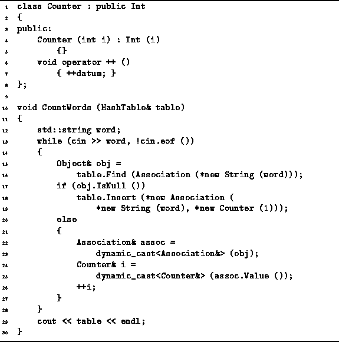

Data Structures and Algorithms
with Object-Oriented Design Patterns in C++
Data Structures and Algorithms
with Object-Oriented Design Patterns in C++Hash and Scatter tables have many applications. The principal characteristic of such applications is that keyed information needs to be frequently accessed and the access pattern is either unknown or known to be random. E.g., hash tables are often used to implement the symbol table of a programming language compiler. A symbol table is used to keep track of information associated with the symbols (variable and procedure names) used by a programmer. In this case, the keys are character strings and each key hash associated with it some information about the symbol (e.g., type, address, value, lifetime, scope).
This section presents a simple application of hash and scatter tables.
Suppose we are required to count the number of occurrences of
each distinct word contained in a text file.
We can do this easily using a hash or scatter table.
Program  gives the an implementation.
gives the an implementation.

Program: Hash/Scatter Table Application--Counting Words
The class Counter is derived from
the class Int defined in Section .
In addition to all the functionality inherited from the base class,
the Counter class adds the member function operator++
which increments the value by one.
The CountWords function does the actual work of counting the words in the input file. It takes as its lone argument a reference to a HashTable. Consequently, it can use any of the hash or scatter table implementations discussed in this chapter. The objects which are put into the hash table by CountWords are all instances of the class Association. Each association has as its key a String class instance, and as its value a Counter class instance.
The CountWords function reads words from the standard input file, cin, one at a time. As each word is read, a Find operation is done on the hash table to determine if there is already an association for the given key. If none is found, a new association is created an inserted into the hash table. The given word is used as the key of the new association and the value is a counter which is initialized to one. On the other hand, if there is already an association for the given word in the hash table, the corresponding counter is incremented. When it encounters the end of the input file, the CountWords function simply prints the hash table on the standard output file, cout.
The running time of the CountWords function depends on a number of factors, including the number of different keys, the frequency of occurrence of each key, and the distribution of the keys in the overall space of keys. Of course, the hash/scatter table implementation chosen has an effect as does the size of the table used. For a reasonable set of keys we expect the hash function to do a good job of spreading the keys uniformly in the table. Provided a sufficiently large table is used, the average search and insertion time is bounded by a constant. Under these ideal conditions the running time should be O(n), where n is the number of words in the input file.
 Copyright © 1997 by Bruno R. Preiss, P.Eng. All rights reserved.
Copyright © 1997 by Bruno R. Preiss, P.Eng. All rights reserved.